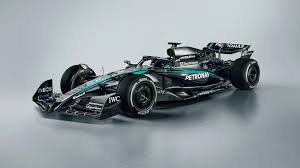

Is mercedes planning a comeback?

Mercedes news
Mercedes-Benz, a German luxury automotive brand of the Mercedes-Benz Group, has been involved in Formula One as both team owner and engine manufacturer for various periods since 1954. The current Mercedes-AMG Petronas F1 Team is based in Brackley, England,[5] and holds a German racing licence.[6] An announcement was made in December 2020 that Ineos planned to take a one third equal ownership stake alongside the Mercedes-Benz Group and Toto Wolff;[7] this came into effect on 25 January 2022. [8] Mercedes-branded teams are often referred to by the nickname, the "Silver Arrows" (German: Silberpfeile).